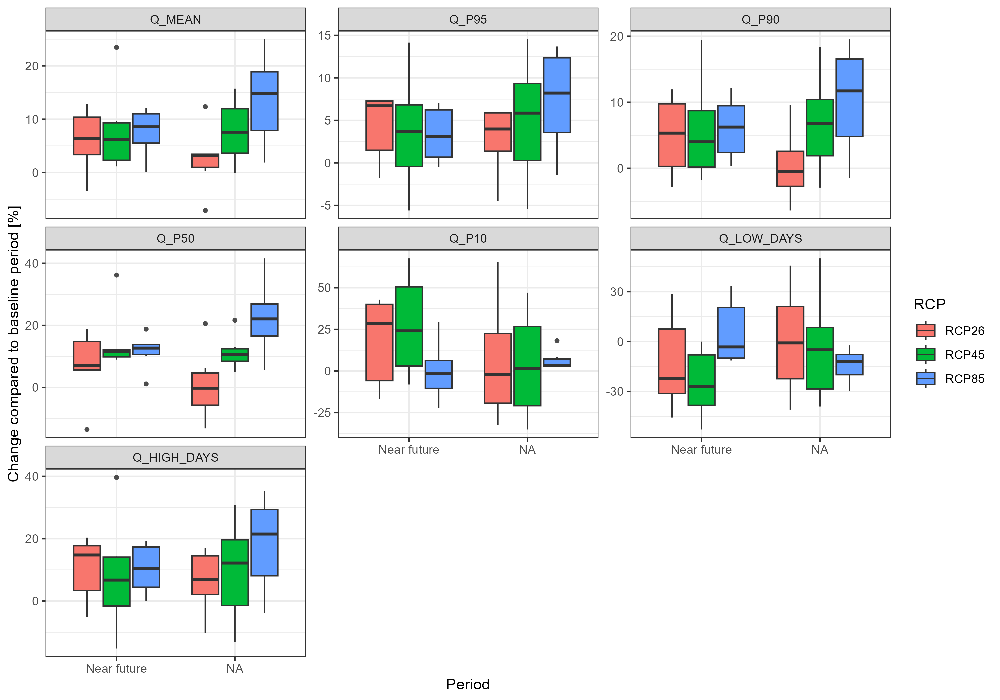
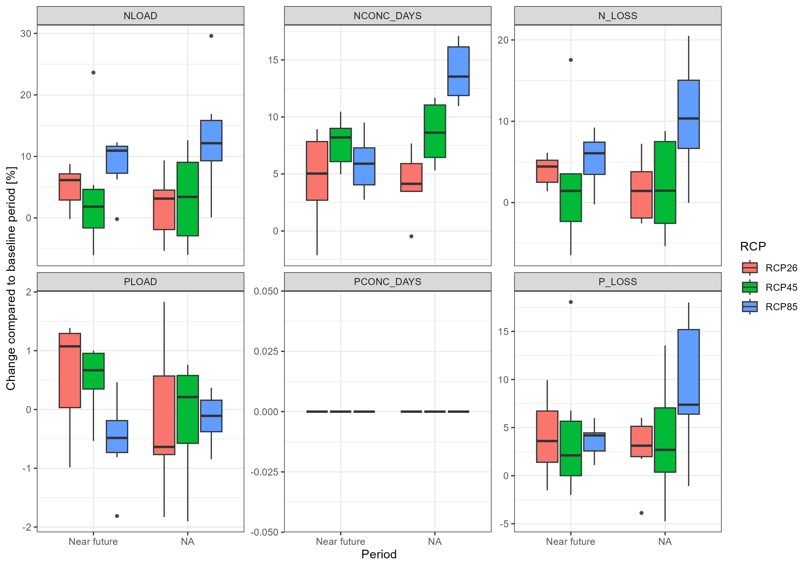

Section 13 Climate Scenarios
13.1 Introduction
See section 7.1 of the modelling protocol for reference
This workflow is adapted / inspired from:
https://github.com/biopsichas/cliwf
The climate scenario files have been sourced from the OPTAIN cloud:
WPs & Tasks > WP3 > Task_3_2 > local data > v1a > data
And are stored here: "model_data/input/climate"
The following models are being used:
| Model number | Driving model (GCM) | Ensemble | RCM | End date | Model code |
|---|---|---|---|---|---|
| 1 | EC-EARTH | r12i1p1 | CCLM4-8-17 | 31.12.2100 | earthcclm |
| 2 | EC-EARTH | r3i1p1 | HIRHAM5 | 31.12.2100 | earthhirh |
| 3 | HadGEM2-ES | r1i1p1 | HIRHAM5 | 30.12.2099 | hadghirh |
| 4 | HadGEM2-ES | r1i1p1 | RACMO22E | 30.12.2099 | hadgracmo |
| 5 | HadGEM2-ES | r1i1p1 | RCA4 | 30.12.2099 | hadgrca |
| 6 | MPI-ESM-LR | r2i1p1 | REMO2009 | 31.12.2100 | mpiremo |
Originally these models were bias adjusted to ERA5-Land, but it was found that ERA5 was too “wet”, therefore they were re-adjusted to local data. The local data used to re-adjust our dataset for CS10 was the local Aas station. However, in this process we lost the “gridded” version of our dataset, and must now work with only one station. An issue (#97) has been created to discuss and potentially fix this.
13.2 Setup
We need the following packages:
# parallel
library(doParallel)
library(foreach)
# spatial
require(sf)
# SWAT
require(SWATprepR)
# We need FarmR 3.2 from optain cloud:
# WPs & Tasks > WP4 > Task 4.4 > Tools to Share > workflow_scripts > SWATfarmR_3.2.0.zip
require(SWATfarmR)
# Data
require(dplyr)
require(readr)
# famrR input
source('model_data/code/functions_write_SWATfarmR_input.R')
require(tidyr)
require(purrr)
require(reshape2)We need to create a SWAT+ setup for each climate scenario (3), RCM (6) and time frame (3) = 54 setups.
# indicators
periods <- c("H", "N", "F")
model_nr <- paste0("rcm", 1:6)
experiments = c("rcp26", "rcp45", "rcp85")
dir.create("model_data/cs10_setup/scenarios", showWarnings = F)
dir.create("model_data/cs10_setup/scenarios/climate_scenarios", showWarnings = F)We will now modify our base setup MetNord_MN2 to be prepared for scenario runs
# make a copy of the base-base setup
base_setup <- "model_data/cs10_setup/txtinout_best_cal"
base_scen <- 'model_data/cs10_setup/scenarios/baseline'
dir.create('model_data/cs10_setup/scenarios/baseline', showWarnings = F)
files_to_copy <- list.files(base_setup, full.names = T)
status <- file.copy(from = files_to_copy, to =base_scen, overwrite = T)We reset our management settings:
# resetting the farmR files
dir <- 'model_data/cs10_setup/scenarios/baseline'
# SWATfarmR::load_farmr(file = paste0(dir,"/cs10.farm"))
# cs10$reset_files()
unlink(paste0(dir,"/cs10.farm"))
unlink(paste0(dir, "/cs10.mgts"))We update our atmospheric data:
## [1] "Working on year 1990"
## [1] "Finished data extraction for year 1990"
## [1] "Working on year 1991"
## [1] "Finished data extraction for year 1991"
## [1] "Working on year 1992"
## [1] "Finished data extraction for year 1992"
## [1] "Working on year 1993"
## [1] "Finished data extraction for year 1993"
## [1] "Working on year 1994"
## [1] "Finished data extraction for year 1994"
## [1] "Working on year 1995"
## [1] "Finished data extraction for year 1995"
## [1] "Working on year 1996"
## [1] "Finished data extraction for year 1996"
## [1] "Working on year 1997"
## [1] "Finished data extraction for year 1997"
## [1] "Working on year 1998"
## [1] "Finished data extraction for year 1998"
## [1] "Working on year 1999"
## [1] "Finished data extraction for year 1999"
## [1] "Working on year 2000"
## [1] "Finished data extraction for year 2000"
## [1] "Working on year 2001"
## [1] "Finished data extraction for year 2001"
## [1] "Working on year 2002"
## [1] "Finished data extraction for year 2002"
## [1] "Working on year 2003"
## [1] "Finished data extraction for year 2003"
## [1] "Working on year 2004"
## [1] "Finished data extraction for year 2004"
## [1] "Working on year 2005"
## [1] "Finished data extraction for year 2005"
## [1] "Working on year 2006"
## [1] "Finished data extraction for year 2006"
## [1] "Working on year 2007"
## [1] "Finished data extraction for year 2007"
## [1] "Working on year 2008"
## [1] "Finished data extraction for year 2008"
## [1] "Working on year 2009"
## [1] "Finished data extraction for year 2009"
## [1] "Working on year 2010"
## [1] "Finished data extraction for year 2010"
## [1] "Working on year 2011"
## [1] "Finished data extraction for year 2011"
## [1] "Working on year 2012"
## [1] "Finished data extraction for year 2012"
## [1] "Working on year 2013"
## [1] "Finished data extraction for year 2013"
## [1] "Working on year 2014"
## [1] "Finished data extraction for year 2014"
## [1] "Working on year 2015"
## [1] "Finished data extraction for year 2015"
## [1] "Working on year 2016"
## [1] "Finished data extraction for year 2016"
## [1] "Working on year 2017"
## [1] "Finished data extraction for year 2017"
## [1] "Working on year 2018"
## [1] "Finished data extraction for year 2018"
## [1] "Working on year 2019"
## [1] "Finished data extraction for year 2019"
## [1] "Working on year 2020"
## [1] "Finished data extraction for year 2020"
## [1] "Working on year 2021"
## [1] "Finished data extraction for year 2021"
## [1] "Working on year 2022"
## [1] "Finished data extraction for year 2022"hacked_atmodep <- function(df, db_path, t_ext) {
tryCatch(
{
SWATprepR::add_atmo_dep(df,db_path, t_ext)
},
error = function(e) {
message('cheeky way to mess with SWATjunaS code')
print(e)
}
)
}
hacked_atmodep(df, "model_data/cs10_setup/scenarios/baseline/", "annual")## [1] "weather-sta.cli file was successfully updated."
## [1] "codes.bsn file was successfully updated."
## [1] "Atmospheric deposition data were written into model_data/cs10_setup/scenarios/baseline/ directory."Set our output in line with OPTAIN project:
Warning: The “gsub” method has been faulty – double check that it worked..
## Input for the print file
print_prt <- read_lines(paste0(base_scen,'/print.prt'), lazy = FALSE)
### WARNING !!!!!!!!!!!!!!! THIS DOESNT WORK OFTEN because OF THE SPACES IN GSUB
print_prt <- gsub(" y ", " n ", print_prt)
print_prt[10+1] <- "basin_wb n y n y "
print_prt[14] <- "basin_pw n y n y "
print_prt[15] <- "basin_aqu n y n y "
print_prt[33] <- "hru_wb n y n y "
print_prt[34] <- "hru_nb n n n y "
print_prt[35] <- "hru_ls n n n y "
print_prt[36] <- "hru_pw n n n y "
print_prt[42] <- "channel_sd n n n y "
print_prt[44] <- "reservoir n n n y "
print_prt <- gsub("hnd ", "hyd", print_prt)
write_lines(print_prt, paste0(base_scen,'/print.prt'))
## Write object.prt
# Set outflow channel ID
outflow_reach <- 37
obj_prt_path <- paste0(base_scen,'/object.prt')
unlink(obj_prt_path)
write.table(paste0("object.prt", ": written by the modded climate-workflow on ",
Sys.time()),
obj_prt_path, append = FALSE, sep = "\t",
dec = ".", row.names = FALSE, col.names = FALSE, quote = FALSE)
write.table(paste(sprintf(c(rep('%12s', 4), '%20s'),
c("ID", "OBJ_TYP", "OBJ_TYP_NO", "HYD_TYP", "FILENAME")),
collapse = ' '), obj_prt_path , append = TRUE,
sep = "\t", dec = ".", row.names = FALSE, col.names = FALSE, quote = FALSE)
write.table(paste(sprintf(c(rep('%12s', 4), '%20s'),
c("1", "sdc", as.character(outflow_reach), "tot", "cha_day.out")),
collapse = ' '), obj_prt_path , append = TRUE,
sep = "\t", dec = ".", row.names = FALSE, col.names = FALSE, quote = FALSE)
# Updating file.cio
file_cio <- readLines(paste0(base_scen, "/", "file.cio"))
file_cio[2] <- "simulation time.sim print.prt object.prt object.cnt null "
file_cio[22] <- "chg cal_parms.cal calibration.cal null null null null null null null "
writeLines(file_cio, paste0(base_scen, "/", "file.cio"))This function will setup our scenario directories with the reference files and climate files based on the run ID we give it.
cli_scen_setup <- function(run_name, base_setup){
# all files that are not climate files, they should be copied in
non_climate_files <- setdiff(list.files(path = base_setup, full.names = TRUE),
list.files(path = base_setup,
pattern = "*.pcp|*.slr|*.tmp|*.hmd|*.wnd",
full.names = TRUE))
# getting out the model and experiment from the directory name
parsed_run <- stringr::str_split(run_name, pattern = "_",simplify = T )
experiment <- parsed_run[,1]
model <- parsed_run[,2]
# from where and to where should the climate files be copied in?
from_dir <- paste0("model_data/input/climate/", experiment, "/", model)
from_files <- list.files(from_dir, full.names = T)
to_dir <- paste0("model_data/cs10_setup/scenarios/climate_scenarios/", run_name)
# create the directory
dir.create(to_dir, showWarnings = FALSE)
# copy over climate scenario files
file.copy(from = from_files, to = to_dir, overwrite = T)
# copy over baseline swat+ files.
file.copy(from = non_climate_files, to = to_dir, overwrite = T)
}This is the list of runs we need to process:
run_name <- c()
for (period in periods){for (model in model_nr){for (experiment in experiments){
run_name <- c( run_name, paste(experiment, model, period, sep = "_"))
}}}
run_name <- sample(run_name) # randomize order
run_name## [1] "rcp45_rcm6_N" "rcp45_rcm5_H" "rcp85_rcm5_N" "rcp85_rcm6_N" "rcp85_rcm5_H"
## [6] "rcp85_rcm5_F" "rcp45_rcm2_F" "rcp26_rcm4_F" "rcp26_rcm4_H" "rcp45_rcm1_F"
## [11] "rcp26_rcm3_H" "rcp85_rcm4_N" "rcp85_rcm6_H" "rcp26_rcm6_F" "rcp45_rcm3_F"
## [16] "rcp26_rcm2_F" "rcp26_rcm1_N" "rcp45_rcm5_N" "rcp45_rcm4_H" "rcp85_rcm4_H"
## [21] "rcp26_rcm5_F" "rcp85_rcm2_F" "rcp26_rcm5_N" "rcp26_rcm2_N" "rcp45_rcm2_H"
## [26] "rcp26_rcm1_H" "rcp26_rcm4_N" "rcp85_rcm6_F" "rcp26_rcm3_F" "rcp26_rcm6_N"
## [31] "rcp85_rcm1_H" "rcp45_rcm6_H" "rcp85_rcm1_F" "rcp45_rcm3_N" "rcp26_rcm1_F"
## [36] "rcp45_rcm5_F" "rcp45_rcm1_H" "rcp85_rcm2_H" "rcp85_rcm3_N" "rcp85_rcm2_N"
## [41] "rcp45_rcm4_F" "rcp45_rcm4_N" "rcp26_rcm5_H" "rcp85_rcm3_H" "rcp45_rcm6_F"
## [46] "rcp45_rcm2_N" "rcp45_rcm1_N" "rcp26_rcm2_H" "rcp85_rcm3_F" "rcp45_rcm3_H"
## [51] "rcp26_rcm6_H" "rcp85_rcm4_F" "rcp85_rcm1_N" "rcp26_rcm3_N"This will create the directories in a parallel manner
## [1] "generating directories with 30 cores"cl <- makeCluster(cores, outfile="")
registerDoParallel(cl)
result <- foreach(run_name = run_name) %dopar% {
cli_scen_setup(run_name = run_name, base_setup = base_scen)
}
stopCluster(cl)
if(length(which(unlist(result) == FALSE)) > 0){warning("some runs failed!")}else{
print("all threads succeded")
}## [1] "all threads succeded"Now, we need to update our time frames, met definitions, and weather generators. The following function does this using SWATprepR.
update_weather <- function(run_name){
# getting out the model and experiment from the directory name
parsed_run <- stringr::str_split(run_name, pattern = "_", simplify = T)
period <- parsed_run[, 3]
## Set the simulation time period
if(period == "H") {from = 1988;to = 2020}
if(period == "N"){from = 2033;to = 2065}
if(period == "F") {from = 2067;to = 2098}
# updating climate
mydir <- paste0("model_data/cs10_setup/scenarios/climate_scenarios/",run_name)
met_lst <- SWATprepR::load_swat_weather(mydir)
from_date <- paste0(from, "-01-01")
to_date <- paste0(to, "-12-31")
# without garbage collection here, everything goes wrong.
gc()
SWATprepR::prepare_climate(
meteo_lst = met_lst,
write_path = mydir,
period_starts = from_date,
period_ends = to_date)
}Executing the update_weather() function in parallel.
Caution, each core uses about 2GB+ of RAM. Only use a few cores for this, not all you have. It also does not take that long.
# cores <- detectCores() - 8
cores <- 12 # this is EXTREMELY memory hungry PER CORE, be careful.
# 12 cores uses 20 gb
print(paste("working with", cores, " cores"))## [1] "working with 12 cores"cl <- makeCluster(cores, outfile="")
registerDoParallel(cl)
myresult <- foreach(run_name = run_name, .packages = c("SWATprepR", "stringr")) %dopar% {update_weather(run_name)}
stopCluster(cl)
if(length(which(unlist(myresult) == FALSE)) > 0){warning("some runs failed!")}else{
print("all threads succeded")
}## [1] "all threads succeded"13.3 Re-Calculating Management
Now we are ready to re-calculate the management for all scenario runs. We need to do this because the “weather” has changed and therefore our virtual farmers need to change when they sow and harvest.
First, we need to create farmR input files for the time frames we now have, the following code does this:
Now we are ready for the long calculation. The following function will re-calculate management operations, and can do so in a parallel manner, which we will need because one run takes about 2-4 hours, and we have 54 of them. With the current setup (cpu42) we can run 30 at once.
farmer_resechedule <- function(run_name){
print(paste("working on", run_name))
# parsing period
parsed_run <- stringr::str_split(run_name, pattern = "_",simplify = T )
period <- parsed_run[,3]
if(period == "H") {from = 1988;to = 2020}
if(period == "N"){from = 2033;to = 2065}
if(period == "F") {from = 2067;to = 2098}
# farmR input path
wd <- "model_data/cs10_setup/scenarios/climate_scenarios/"
dir <- paste0(wd, run_name)
fip <- paste0("model_data/input/management/farmR_input_", from, "_", to, ".csv")
farmscen <- SWATfarmR::farmr_project$new(project_name = run_name, project_path = dir)
farmscen$read_management(file = fip, discard_schedule = T)
pcp <- farmscen$.data$variables$pcp
if((pcp$date %>% last() == paste0(to,"-12-31")) == FALSE){
stop(run_name, "has issues with the end day")
}
# using temp API
# TODO add real API
# Extract the hydrologic soil group values for all HRUs
hsg <- select(farmscen$.data$meta$hru_attributes, hru, hyd_grp)
# Calculate api values for the hsg classes A to D
api_A <- variable_decay(variable = pcp, n_steps = -5, decay_rate = 1)
api_B <- variable_decay(variable = pcp, n_steps = -5, decay_rate = 0.8)
api_C <- variable_decay(variable = pcp, n_steps = -5, decay_rate = 0.7)
api_D <- variable_decay(variable = pcp, n_steps = -5, decay_rate = 0.5)
# Bind the data together into one api table and name them with the hsgs
api <- bind_cols(api_A, api_B, api_C, api_D)
names(api) <- c('api_A', 'api_B', 'api_C', 'api_D')
# To add the variable to the farmR you have to tell it which variables are
# assigned to which HRUs
hru_asgn <- mutate(hsg, api = paste0('api_', hyd_grp)) %>% select(hru, api)
# Add the variable api to the farmR project
farmscen$add_variable(data = api, name = 'api', assign_unit = hru_asgn, overwrite = T)
# Schedule operations
farmscen$schedule_operations(start_year = from,
end_year = to,
n_schedule = 2, replace = "all")
# Write operations
farmscen$write_operations(start_year = from, end_year = to)
}Here we execute the parallel calculation of FarmR runs: This will take very long (about 4.6 hours)
cores <- detectCores() - 2
print(paste("working with", cores, " cores"))
t1 = Sys.time()
cl <- makeCluster(cores, outfile="")
registerDoParallel(cl)
farmRresult <- foreach(run_name = run_name,.packages = c("SWATfarmR", "stringr", "dplyr")) %dopar% {
farmer_resechedule(run_name = run_name)
}
stopCluster(cl)
t2 = Sys.time()
if(length(which(unlist(myresult) == FALSE)) > 0){warning("some runs failed!")}else{
print("all threads succeded")
print(t2-t1)
}Back up the farmers and their calculated managements.
Question: WHERE HAS THE .FARM FILE GONE? not used in farmR 3.2?
scen_dir <- "model_data/cs10_setup/scenarios/climate_scenarios/"
our_farmers <- list.files(scen_dir, pattern = "*.mgts", recursive = T, full.names = T)
dir.create("model_data/input/climate/scenario_farmers", showWarnings = F)
file.copy(our_farmers, to = "model_data/input/climate/scenario_farmers", overwrite = T)Now, if we would like to skip re-calculating the FarmR, we can just load in the backups:
13.4 Executing model
This code looks like it was written by a neanderthal, but it gets the job done. (Run time: 1.3 hours)
swatt1 <- Sys.time()
m_dir <- list.dirs("model_data/cs10_setup/scenarios/climate_scenarios/", recursive = F, full.names = T)
wd <- getwd()
swat_path <- "D:/git/swat-cs10/model_data/cs10_setup/Rev_61_0_64rel.exe"
swat_exe <- "Rev_61_0_64rel.exe"
cores = detectCores() - 2
library(doParallel)
require(foreach)
cl <- makeCluster(cores, outfile="")
registerDoParallel(cl)
txt_info <- foreach (d = m_dir) %dopar% {
# run SWAT for all cal files in parallel
setwd(paste(wd, d, sep='/'))
file.copy(swat_path, swat_exe)
system(swat_exe)
}
stopCluster(cl)
swatt2 <- Sys.time()
if((txt_info %>% unlist() %>% sum())>0){
warning("some SWAT+ runs had non-zero exit status!\n")
print(swatt2-swatt1)
print(txt_info)
}else{
print("all swat runs succeeded")
print(swatt2-swatt1)
}## [1] "all swat runs succeeded"
## Time difference of 1.567261 hours13.5 Processing Results
We need to define some settings:
outflow_reachis our outflow channel ID frombuildR(unconfirmed)sw_periods: The start and end months of soil-water analysis.crop_sel: The crops to analyzegrain_units: These values come from Felix Witing. The reference for these values is “3120100-0000.xlsx Getreideeinheitenschlüssel” from BMEL. some info:- “The reference values for the crop-specific grain units have been updated in 2010. The Excel file contains both, the old and the new values. Important: the values refer to fresh matter crop yield!”
- Some background on the update process can be found in this report.
Cleaning up
tmp_path <- "model_data/cs10_setup/scenarios/"
cl <- makeCluster(cores, outfile="")
registerDoParallel(cl)
pres <- foreach (d = m_dir) %dopar% {
setwd(paste(wd, d, sep='/'))
cal <- paste(wd, tmp_path, "scs_results", tail(unlist(strsplit(d,'/')), n = 1), sep = "/")
dir.create(cal, recursive = TRUE)
dir.create("RESULTS", showWarnings = F)
files.out.aa <- list.files(pattern = 'aa', full.names = T)
files.out.mon <- list.files(pattern = 'mon', full.names = T)
files.out.day <- list.files(pattern = 'day', full.names = T)
files.help <- c('hru.con') # please provide hru_agr.txt file 'hru_agr.txt'
## (cropland hru names) in txt folder
file.copy(
from = c(files.out.aa, files.out.mon, files.out.day, files.help),
to =cal,
overwrite = T
)
unlink(swat_exe)
}
stopCluster(cl)Data processing and plotting, done by Micha’s code.
require(readr)
require(tidyverse)
require(data.table)
require(xts)
require(dygraphs)
require(R.utils)
require(foreach)
require(doParallel)
require(data.table)
require(ggplot2)
require(fmsb)
require(dplyr) # dplyr must be loaded last.
source('model_data/code/calc_Indis.R')TODO: We need to set the thresholds!! See issue #102
outflow_reach <- 37
### collect HRU-based indicators related to water quantity (average annual for
## specified months)
## please specify start and end months of interest for the soil water analysis
sw_periods <- list(c(5:9), 5, 6, 7, 8, 9) #this is an example for printing sw for
## the period May to September and also for each single month in that period
### collect cropping information for all scenarios - grain units and cultivated
## hectare average annual
## define 1) path, 2) crop selection, 3) type of output: a) yield, b) ha, 4)
## specify grain units equivalent for
# all of the selected crops (if you just keep the parameter 'grain_units',
## there is already a parameterisation for
# 'wwht', 'akgs', 'wbar', 'wira', 'csil', 'wiry', 'sgbt','barl'
# the measure list (measr.list) can be adapted to the measures you want to compare
## Crop selection
crop_sel <- c("wwht", "barl", "oats", "swht", "pota")
## Grain units
grain_units <- data.frame('wwht' = 1.209, 'barl' = 1.163, "oats" = .84, "swht" = 1.04, "pota" = .22)
## Thresholds for nutrient and sediment concentrations for output analysis
# thresholds for nitrogen concentration (mg N/l) and phosphorus concentration (mg P/l)
# the number of days beyond these thresholds will later be calculated
# default value are the respective median values of reported threshold values
# for very small siliceous rivers in lowland across Europe
# (https://www.sciencedirect.com/science/article/pii/S0048969719338380)
# please check if this is appropriate for your case study (e.g. type of river)
# feel free to use other threshold values!!
# TN - 775 ug/l, TP - 60 ug/l
threshold_N=0.775
threshold_P=0.06
# threshold for sediment concentration (mg N/l)
# the number of days beyond this threshold will later be calculated
# default value is 50 mg/l (missing reference),
# if you know a reference please let me know (michael.strauch@ufz.de)
# feel free to use another threshold value!!
threshold_Sed=5013.6 Output Analysis
(warranty provided by Micha ;)
In the following functions to calculate indicators are applied.
Please adjust function parameters (e.g. channel name, see also header information of calc_Indis.R).
In case an ensemble of calibration files is provided (in folder cal_files), set ensemble=T.
- The resulting dataframe will provide you the ensemble mean as well as the ensemble minimum (lower) and maximum (upper) of the respective indicator.
- If no cal file ensemble can be provided, set ensemble=F (but then make sure you have a calibration.cal with fitted parameters in the txt folder)"## Direstory with the simulation results
path <- "model_data/cs10_setup/scenarios/scs_results"
### collect average annual output of water quantity and quality at outlet channel
## (aggregated comparison)
r_dir <- list.dirs(path, recursive = TRUE)[-1]
rch <- sprintf("cha%03d", outflow_reach)##------------------------------------------------------------------------------
## 10) Output analysis from Micha (warranty provided by Micha ;)
##------------------------------------------------------------------------------
### In the following functions to calculate indicators are applied
### Please adjust function parameters (e.g. channel name, see also header
## information of calc_Indis.R)
### In case an ensemble of calibration files is provided (in folder cal_files),
## set ensemble=T
### The resulting dataframe will provide you the ensemble mean as well as the
## ensemble minimum (lower)
### and maximum (upper) of the respective indicator
### If no cal file ensemble can be provided, set ensemble=F
### (but then make sure you have a calibration.cal with fitted parameters in
## the txt folder)
### collect average annual output of water quantity and quality at outlet channel
## (aggregated comparison)
#r_dir <- list.dirs(path, recursive = TRUE)[-1]
#rch <- sprintf("cha%03d", outflow_reach)
# threshold for low flow
# the number of days below this threshold will later be calculated
# default value is the 5th percentile of rcp26 for the baseline period (average across all rcms)
# feel free to use another threshold value!!
tmp_df <- ind_cha_dayII(r_dir, rch, 'Q_p95p05', ensemble=F)
threshold_lowQ <- mean(tmp_df[seq(2,17,3),8]) #adjust channel
# threshold for high flow
# the number of days beyond this threshold will later be calculated
# default value is the 95th percentile of rcp26 for the baseline period (average across all rcms)
# feel free to use another threshold value!!
threshold_highQ <- mean(tmp_df[seq(2,17,3),4]) #adjust channel
### collect indicators related to the average annual water balance
cha_aa_all <- ind_cha_aa(r_dir, rch) #adjust channel
### collect indicators related to the daily dynamics Water, N, P, Sed
cha_day_all <- ind_cha_dayII(r_dir, rch, 'all',
threshold_lowQ = threshold_lowQ,
threshold_highQ = threshold_highQ,
threshold_N = threshold_N,
threshold_P = threshold_P,
threshold_Sed = threshold_Sed) #adjust channel
### collect HRU-based indicators related to water quality (average annual losses)
hru_aa_nb_all <- ind_hru_aa_nb(r_dir) #adjust channel
### collect HRU-based indicators related to water quantity (average annual values)
hru_aa_wb_all <- ind_hru_aa_wb(r_dir)
### collect HRU-based indicators related to water quantity (average annual for
## specified months)
## please specify start and end months of interest for the soil water analysis
sw_periods <- list(c(5:9), 5, 6, 7, 8, 9) #this is an example for printing sw for
## the period May to September and also for each single month in that period
hru_mon_all <- ind_hru_mon_wb(r_dir, period = sw_periods, nrows = 54) #might take a while
### collect cropping information for all scenarios - grain units and cultivated
## hectare average annual
## define 1) path, 2) crop selection, 3) type of output: a) yield, b) ha, 4)
## specify grain units equivalent for
# all of the selected crops (if you just keep the parameter 'grain_units',
## there is already a parameterisation for
# 'wwht', 'akgs', 'wbar', 'wira', 'csil', 'wiry', 'sgbt','barl'
# the measure list (measr.list) can be adapted to the measures you want to compare
#adjust
crop_aa_gu <- ind_bsn_aa_crp(r_dir, crop_sel, out_type = "yield", grain_units)
crop_aa_ha <- ind_bsn_aa_crp(r_dir, crop_sel, out_type = "ha", grain_units)
### collect cropping information for all scenarios - Crop specific average annual
## yield and ha
crop_aa_all <- ind_bsn_aa_crp_ha_Y(r_dir, crop_sel)
##------------------------------------------------------------------------------
## 11) Aggregate outputs into one dataframe for plotting
##------------------------------------------------------------------------------
### combine data of interest in one dataframe for plotting
df_plot <- cha_aa_all
for(l in list(cha_day_all, hru_aa_nb_all, hru_aa_wb_all, hru_mon_all, crop_aa_gu,
crop_aa_ha, crop_aa_all)) df_plot <- left_join(df_plot, l, by = "scen_name")
df_plot_long <- pivot_longer(df_plot, cols = -scen_name, names_to = "indi", values_to = "value")
## Get long format for plotting
df_plot_long <- df_plot_long[!grepl("_H$", df_plot_long$scen_name),] %>%
mutate(scen_base = gsub("_[[:alpha:]]*$","",scen_name)) %>%
left_join(df_plot_long[grepl("_H$", df_plot_long$scen_name),] %>%
mutate(scen_base = gsub("_[[:alpha:]]*$","",scen_name)) %>%
dplyr::rename(value_base = value) %>%
select(-scen_name), by = c("scen_base", "indi")) %>%
mutate(value = round(100*(value/value_base-1), 3)) %>%
select(-ends_with("base")) %>%
mutate(scen_name = toupper(scen_name)) %>%
mutate_all(~ifelse(is.nan(.), NA, .)) %>%
mutate(scen_name = gsub("_[^_]*_", "_", scen_name)) %>%
separate(scen_name, into = c("RCP", "Period"), sep = "_") %>%
mutate(Period = case_when(Period == "N" ~ "Near future",
Period == "E" ~ "End century")) %>%
mutate(Period = factor(Period, levels = c("Near future", "End century")))
##------------------------------------------------------------------------------
## 12) Plotting your results
##------------------------------------------------------------------------------
## Print all available indicators
unique(df_plot_long$indi)## [1] "Q_mean" "Nload" "Pload" "Sedload"
## [5] "Q_max" "Q_max_aa" "Q_p95" "Q_p90"
## [9] "Q_p50" "Q_p10" "Q_p05" "Q_min"
## [13] "Q_min_aa" "Q_maxmin" "Q_maxmin_aa" "Q_low_days"
## [17] "Q_high_days" "Nconc_days" "Pconc_days" "Sedconc_days"
## [21] "N_loss" "P_loss" "Sed_loss" "N_loss_ratio"
## [25] "P_loss_ratio" "sw" "perc" "precip"
## [29] "snofall" "snomlt" "surq_gen" "latq"
## [33] "wateryld" "et" "ecanopy" "eplant"
## [37] "esoil" "surq_cont" "cn" "sw_300"
## [41] "pet" "qtile" "surq_cha" "latq_cha"
## [45] "sw_5_6_7_8_9" "sw_5" "sw_6" "sw_7"
## [49] "sw_8" "sw_9" "grain_units_aa" "crops_ha_aa"
## [53] "wwht_ha" "barl_ha" "oats_ha" "swht_ha"
## [57] "pota_ha" "wwht_yld_t_ha" "barl_yld_t_ha" "oats_yld_t_ha"
## [61] "swht_yld_t_ha" "pota_yld_t_ha"## Plotting selected indicators: divided into 4 thematic plots. See calc_indic.R for indicator explanations
# First plot - water balance indicators (some of them can be removed if not relevant, others may be added)
plot <- throw_box(df_plot_long, c("precip", "snofall", "snomlt", "pet", "et", "perc",
"sw", "sw_5", "sw_6", "sw_7", "sw_8", "sw_9", "sw_300",
"surq_cha", "latq_cha", "qtile"))
ggsave("model_data/results/scs_water_balance_indicators.png", plot, width = 3000, height = 2100, units = "px")
#Second plot - flow indicators (some can be removed if not relevant, others can be added)
plot <- throw_box(df_plot_long, c("Q_mean", "Q_p95", "Q_p90", "Q_p50", "Q_p10",
"Q_p90p10", "Q_low_days", "Q_high_days"))
ggsave("model_data/results/scs_flow_indicators.png", plot, width = 3000, height = 2100, units = "px")
# #throw_box funtion could be addapted to remove outliers or increase font size
# throw_box(df_plot_long, c("Q_mean", "Q_p95", "Q_p90", "Q_p50", "Q_p10",
# "Q_p90p10", "Q_low_days", "Q_high_days"), drop_outliers = TRUE, font_size = 14)
#Third plot - water quality indicators (some can be removed if not relevant, others can be added)
plot <- throw_box(df_plot_long, c("Nload", "Nconc_days", "N_loss","Pload", "Pconc_days", "P_loss"))
ggsave("model_data/results/scs_water_quality_indicators.png", plot, width = 3000, height = 2100, units = "px")
#Fourth plot - crop yields - major crops from each CS should be selected
plot <- throw_box(df_plot_long, c("swht_yld_t_ha", "barl_yld_t_ha", "oats_yld_t_ha",
"pota_yld_t_ha", "wwht_yld_t_ha"))
ggsave("model_data/results/scs_crop_yield.png", plot, width = 3000, height = 2100, units = "px")
##------------------------------------------------------------------------------
## 13) DATA FOR THE SYNTHESIS REPORT (send to Svajunas & Mikolaj)
##------------------------------------------------------------------------------
saveRDS(df_plot_long, file = paste0("model_data/results/climate_report.rds"))

13.7 Saving RDS
The core team would like this file from us:
##------------------------------------------------------------------------------
## 13) DATA FOR THE SYNTHESIS REPORT (send to Svajunas & Mikolaj)
##------------------------------------------------------------------------------
saveRDS(df_plot_long, file = paste0("model_data/results", "/climate_report.rds"))